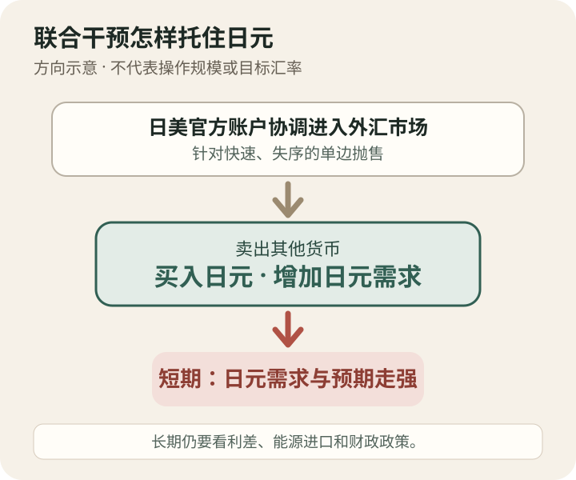

今日热点 01 · 金融 / 汇率
美国与日本确认联合买入日元
美元兑日元一度站上163，日美干预及官方确认后，周一曾跌到约155.20。两国这次针对的是贬值速度和市场失序，不是承诺把汇率固定在某个数字。

发生了什么
罕见之处不只是日本出手，而是美国一起进场
美联社报道，日本财务大臣片山皋月确认，日本财务省与美国财政部协调买入日元；美国总统也确认美方提供了帮助。Axios援引美国财政部官员称，这次行动是为了应对日元抛售的速度和失序程度，避免动荡向其他市场扩散。
消息确认后，美元兑日元周一一度降到约155.20；此前曾站上163，触及四十年高位附近。汇率写法是“一美元能换多少日元”，数字下降意味着日元相对走强。单日跳动很大，但它仍是市场价格，不是政府宣布的新固定汇率。
本期增量
7月讲日元为什么跌，今天只讲联合干预怎样改变局面
7月24日的《每日谈资》已经解释过日元走弱的一般背景。本次重选，是因为日美确认联合干预构成新的政策动作。操作方向并不神秘：官方卖出所持的其他货币、买入日元，短期增加日元需求，也向交易者表明快速单边下跌会遭遇阻力。
干预能不能维持效果，还要看利差、能源进口和财政政策等更慢的因素。美日2025年的财长联合声明也写明，外汇干预应留给过度波动和失序走势。对去日本旅行或购买进口商品的人，眼前报价会改变预算；但不宜把一次出手当成长期汇率保证。
干预能改变市场的速度和预期，却不能替代决定汇率的长期条件。